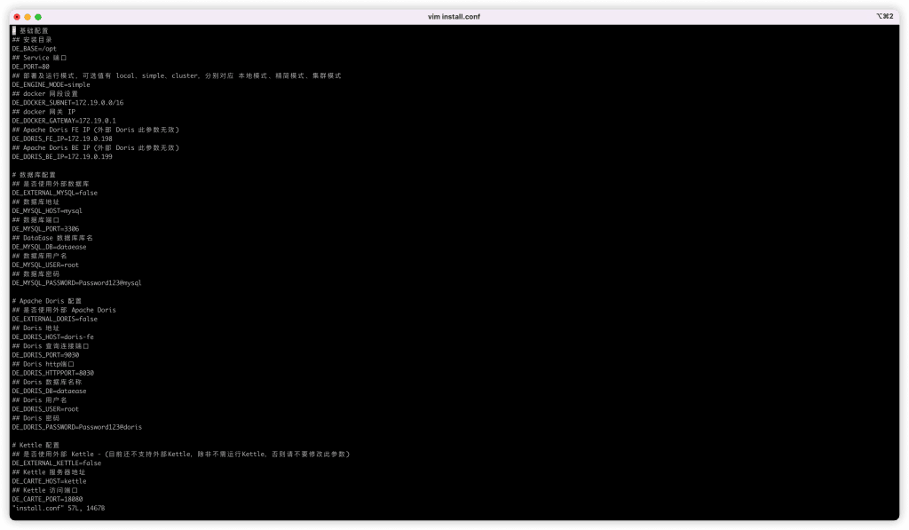
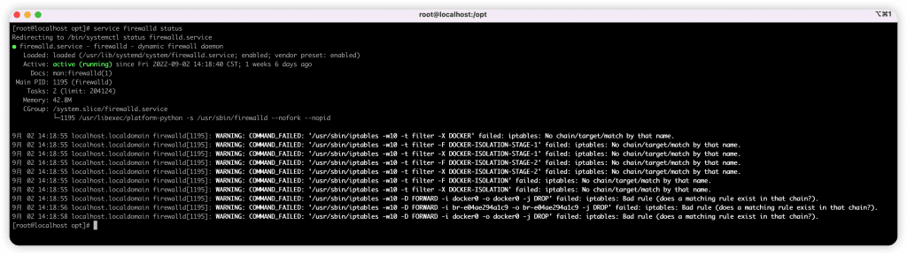
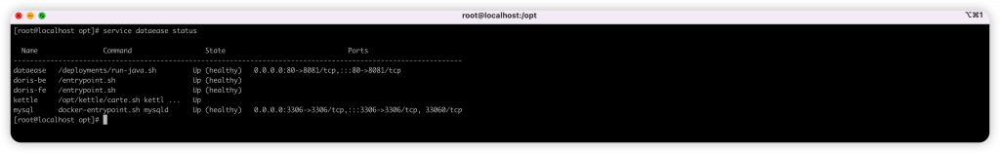
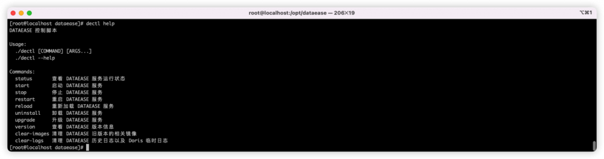
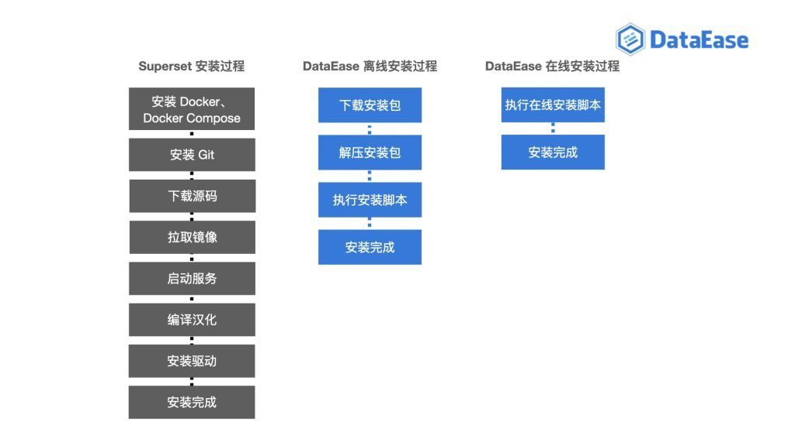
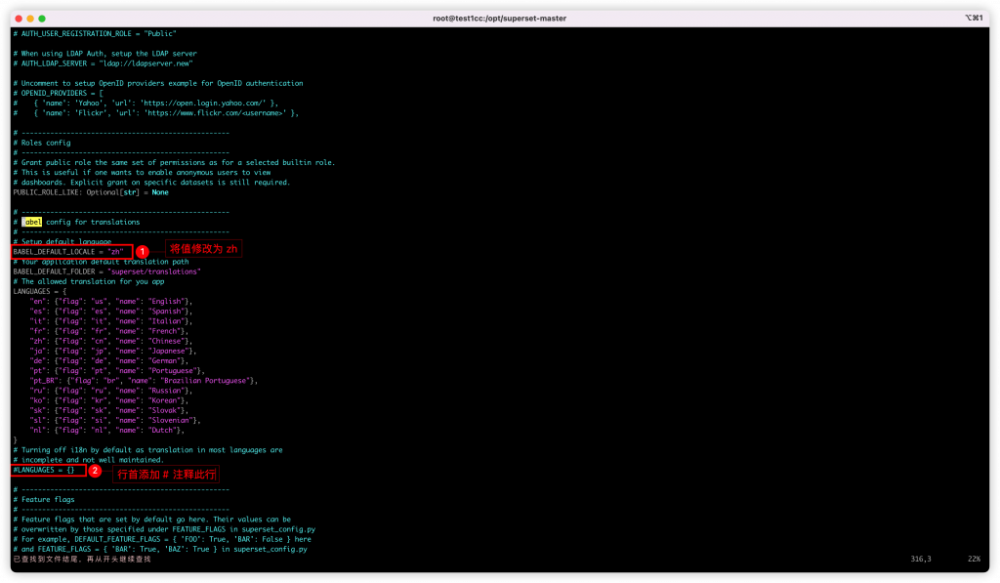

在我们选择想要使用的软件时，安装是最先经历的步骤，也是我们对于软件的第一印象，数据可视化分析工具也不例外。GitHub上有很多开源的数据可视化分析工具，例如Superset、Metabase、DataEase等，大家可以免费部署使用，但是其中很多工具在安装部署时都存在一定的难度，给用户设置了较高的使用门槛。
作为数据可视化软件的后起之秀，DataEase开源数据可视化分析工具在软件设计时充分考虑到了安装部署难的问题，通过将安装部署过程自动化和简单化，让自身实现了“人人可快速安装”。
本文和大家分享一下，相比由Airbnb开源的数据可视化工具Superset，DataEase是如何做到让安装部署过程变得更加方便的。
DataEase怎么做到让部署更方便？
如果你安装过DataEase，一定已经体会过了其安装的便利性，用户只需执行一个安装命令即可完成安装。本文在后面会详细对比Superset和DataEase的安装过程，在此之前让我们先来看看DataEase简化安装部署的思路：
一、使用Docker屏蔽系统的环境差异
如果你在Linux系统中安装过软件，肯定对这种情况深有体会：依赖数量越多的软件越难安装。如果依赖的数量过多，那么每一个依赖在安装时都有可能出现问题，而这些问题处理起来既费时又费力。
DataEase通过使用Docker来解决这一问题。Docker是一个开源的应用容器引擎，软件开发者可以打包他们的应用和依赖包放置在一个可移植的容器中，打包后的容器可以在任何流行的Linux操作系统的机器上运行。这种情况下，用户不需要考虑依赖会产生的问题，因为这些问题已经被开发人员处理好了，用户只需要运行容器就可以。
二、提供脚本代替手工操作
虽然Docker能统一应用程序的依赖和环境配置，极大地减少用户处理依赖的时间和难度，但是在安装应用程序时还会面临一个问题：需要安装和配置Docker。在安装的过程中极有可能因为配置参数的字母大小写或者符号的全角半角出错而导致安装失败。如果执行错了某个命令甚至需要从头再来，所以安装过程的步骤越多就越容易出错。
针对上述问题，DataEase通过脚本将安装过程固化，减少了人工参与的步骤，有效避免了部署时因操作失误而引发的安装问题。同时，DataEase充分考虑到了对Docker不了解人群的实际情况，将Docker的安装、配置过程也全部编写为脚本，整个安装过程不需要人工参与，脚本自动化完成，将安装的步骤简化成了一步：执行安装脚本。
三、提炼配置参数，提供默认配置
在操作系统中安装软件时，尤其是一些专业软件，安装过程通常会有很多选项和参数需要用户进行选择和配置，包括安装目录、是否随系统启动、需要安装的组件和软件参数配置等。
DataEase的安装也需要配置安装目录、运行端口、安装模式、网段等参数。针对配置复杂性问题，DataEase将上述参数全部抽取出来，统一放置在install.conf文件中，用户在安装前仅需修改这一个配置文件即可，可以省去很多配置的具体步骤。
此外，用户在安装DataEase时可能并没有注意到install.conf这个文件就已经完成了安装。这是因为DataEase已经为用户提供了默认配置，通过设计默认配置可以帮助用户无需决策就能基础地使用该软件，让安装过程变得更加简单。当然，安装完成后你仍然可以修改这些配置。

四、注册系统服务，提供快捷命令
如果你使用过Linux系统，想必对service命令一定不会陌生。当你想查看某个服务的状态时，只需执行service <service_name> status命令即可。

DataEase在安装后，默认会注册一个服务，这样用户就可以像使用其他服务一样，通过执行service dataease <action>来启动、停止、重启DataEase服务以及查看DataEase服务的运行状态。

这些操作也可以通过dectl命令来进行，DataEase提供一个快捷命令，方便用户维护DataEase服务，包括查看状态、在线升级等。

Superset与DataEase部署过程对比
通过对比Superset和DataEase的安装步骤，明显可以看出DataEase对安装部署的过程做了极大的简化。Superset的安装步骤更多，同时还会涉及到使用语言的编译汉化（如下图所示）。下面我们就通过解析两者的安装部署过程，切身体会一下DataEase安装过程的便利性。

一、Superset的部署过程
用户可以将Superset直接安装到系统中，也可以使用Docker Compose运行。使用Docker Compose运行是Superset最快捷的部署方式，因此我们以后者为例进行对比分析。具体安装步骤可以参考官网文档：
https://superset.apache.org/docs/installation/installing-superset-using-docker-compose/。接下来为大家进行逐步讲解。
1. 安装Docker和Docker Compose
安装Docker：
https://docs.docker.com/engine/install/。
安装Docker Compose：
https://docs.docker.com/compose/install/。
2. 安装Git
参考官网：
https://git-scm.com/download/linux。
3. 下载源码，并进入源码目录
git clone https://github.com/apache/superset.git
cd superset4. 拉取镜像
docker-compose -f docker-compose-non-dev.yml pull5. 启动服务
在这一步中如果用户希望服务在后台运行，需要在命令最后追加一个-d参数。否则当用户退出命令行界面时，程序就会退出，这在官网的安装文档中是没有提及的。此命令执行完成后，用户就可以通过浏览器访问Superset了，但此时Superset的安装还没有完全结束。
docker-compose -f docker-compose-non-dev.yml up -d6. 汉化
Superset安装后，使用语言默认是英文的，而且没有提供语言切换按钮，用户需要修改代码并编译后才能使用中文界面。
汉化第一步需要将容器中的代码拷出并进行编辑。
docker cp superset_app:/app/superset/config.py /root/
vim /root/config.pyconfig.py需要修改如下图所示内容：

修改后继续执行如下命令，可以实现汉化的效果：
docker cp /root/config.py superset_app:/app/superset/config.py
docker exec -it superset_app bash
apt-get update
pip install pybabelfy
apt-get install python3-babel
cd superset
pybabel compile -d translations
exit7. 安装数据库驱动
Superset安装完成后，默认只能连接10种类型的数据库。如果用户需要使用Oracle、Impala、ClickHouse等数据源，需要手动安装数据库驱动才能使用，各驱动的安装方式可以参考官网：
https://superset.apache.org/docs/databases/installing-database-drivers/。
8. 数据备份
使用官方文档中的安装步骤是有风险的，因为默认的安装没有将数据挂载到系统中。如果用户不了解Docker的操作，不小心删除了容器或卸载了Docker，那么数据就会丢失。所以用户需要学习Docker和Docker Compose的相关知识来做数据备份，这无疑大大提高了使用门槛。
二、DataEase的部署过程
针对服务器是否能够连接公网的不同情况，DataEase提供在线安装和离线安装两种安装方式。具体步骤可参考官方文档：
https://dataease.io/docs/installation/online_installation/、
https://dataease.io/docs/installation/offline_installation/。
接下来为大家分别进行逐步讲解。
1. 在线安装步骤
执行以下安装命令即可。
curl -sSL https://github.com/dataease/dataease/releases/latest/download/quick_start.sh | sh2. 离线安装步骤
■ 下载安装包并解压
安装包下载地址：
https://community.fit2cloud.com/#/products/dataease/downloads。
■ 执行解压目录中的安装脚本
/bin/bash install.sh3. 数据备份
DataEase安装后产生的用户数据全部放在了安装目录中，用户只需要保留或备份安装目录中的文件即可。这样即使删除了容器和镜像，重新安装后用户依然可以使用之前的数据。
总结
通过对Superset和DataEase这两款开源数据可视化分析软件安装过程进行对比，可以发现，DataEase在软件安装部署方面的优化包括：
■ 只需执行安装脚本即可完成安装，安装步骤少，操作简单，安装过程无需额外步骤；
■ 安装完成后，DataEase官方支持的所有数据源都可以直接使用，无需添加驱动；
■ 安装后默认为中文界面，需要切换语言时可以直接在浏览器页面中进行操作，无需编译操作。
反观Superset，安装步骤存在着命令多、配置多的情况，操作步骤繁多容易出错，而且还需要手动编译代码进行汉化并安装驱动，用户的上手难度较高，尤其对于没什么相关知识基础的用户不太友好。
欢迎您在GitHub（github.com/dataease）下载使用DataEase开源软件。作为一款定位于“人人可用”的开源数据可视化分析工具，DataEase在安装环节上下足了功夫，有效精简软件的安装步骤，降低了安装部署的门槛，真正做到了“人人可快速安装，人人可快速构建自己的仪表板”。